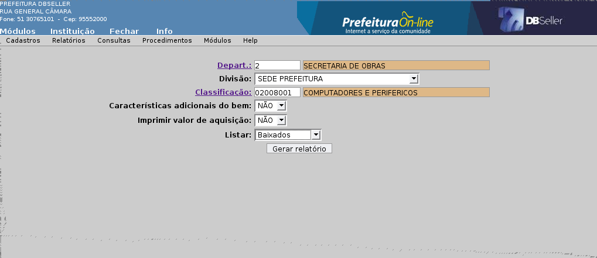
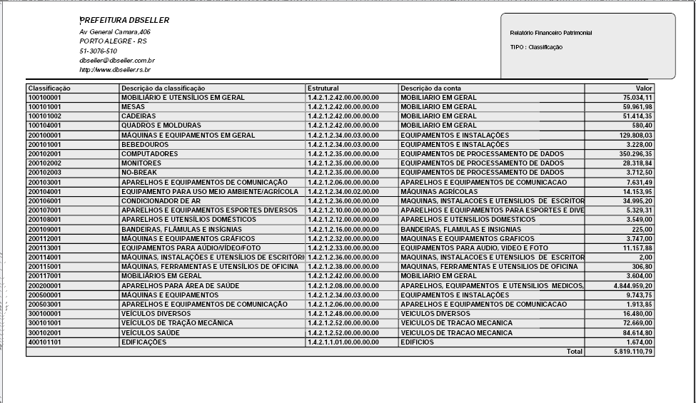
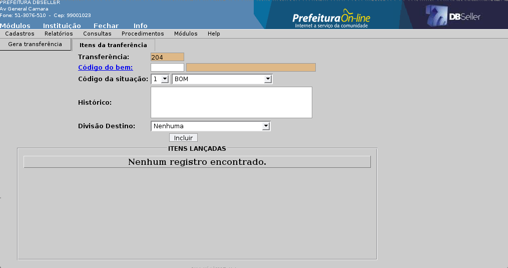
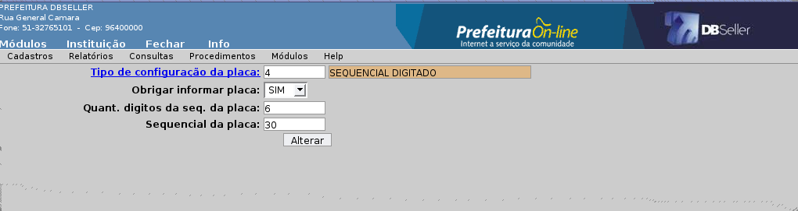
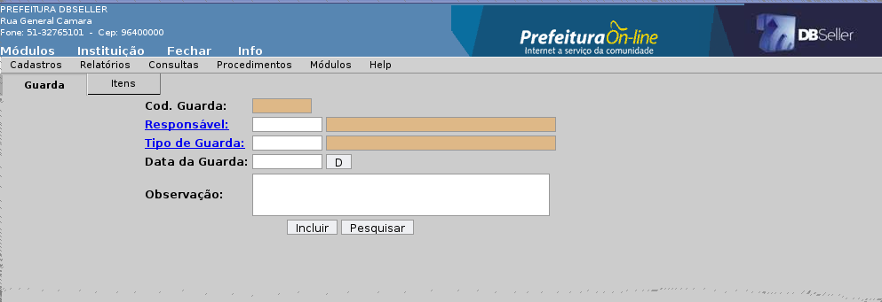
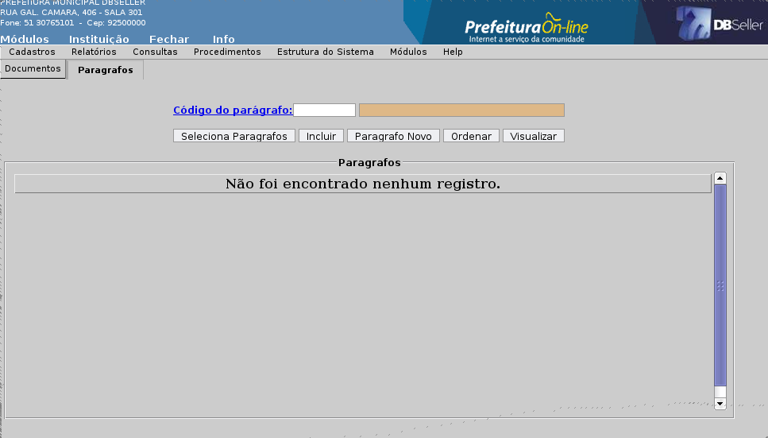
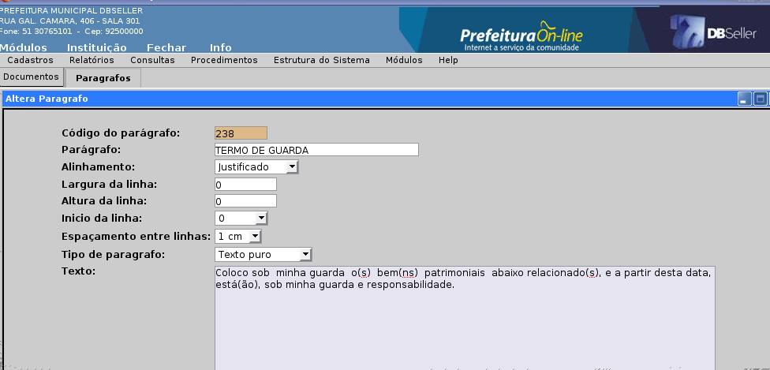
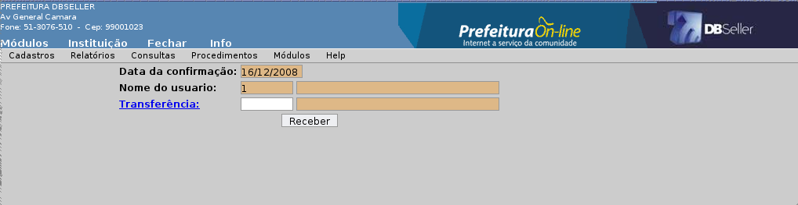

figura 1
Índice
Cadastro de bens de forma individual 11
Cadastro de bens de forma global 14
Tipo de Configuração da Placa 17
Reemite Ficha de Transferência 21
Relatório Financeiro Patrimonial 31
Confirmação de Transferência 46
Alteração de Situação de Bem Cadastrado de Forma Individual 49
MÓDULO PATRIMÔNIO
Baixa patrimonial é o procedimento de exclusão de bens do controle analítico do patrimônio, bem como do controle sintético contábil do ativo permanente. A baixa patrimonial pode ser total ou parcial e ocorrerá quando da perda do domínio por parte da administração (Paulo César Flores - Controles Internos dos Bens Patrimoniais nos Municípios). Essa classificação deverá ser definida previamente, ou seja, deve ser criada antes do cadastramento dos bens no sistema.
Ex.: venda, permuta, doação, dação em pagamento, furto, roubo, sinistro, etc.
Na tela da figura 1 tem-se as seguintes informações:
figura
1
Motivo da baixa: que nada mais é do que o código a ser criado pelo sistema para aquele tipo de baixa que estamos cadastrando;
Descrição do motivo da baixa: que é a descrição do tipo de baixa propriamente dito, ou seja, se a baixa foi motivada por venda, doação, furto, sinistro,etc.
A alteração dos tipos de baixa poderá ser feita clicando-se no sub menu “alteração”.
A exclusão dos tipos de baixa poderá ser feita clicando-se no sub menu “exclusão”.
A administração pode definir um sistema de controle interno de seu patrimônio como mecanismo de auto-controle, ou seja, criar um comissão avaliadora dos bens patrimoniais, seja ela de caráter emergencial ou permanente.
A inclusão de uma comissão no sistema nada mais é do que o cadastro dos membros que formarão esta comissão, como se verifica na fugura 2.

figura
2
Código da Comissão: seqüencial da comissão fornecida pelo sistema;
Data de início: data de início dos trabalhos da comissão;
Data final: data final de exercício da comissão;
Cód. Usuário: código do membro responsável pela mesma.
A segunda aba destinada a inclusão dos usuários que formarão a comissão, traz o código da comissão criado pelo sistema e o código do usuário.
Código da comissão: seqüencial da comissão fornecida pelo sistema;
Cód. Usuário: usuários que formarão a comissão.
Nesta tela o usuário deve informar ao sistema o código dos usuários que formarão a comissão.
A alteração das comissões poderá ser realizada no sub menu “alteração”.
A exclusão das comiisões poderá ser realizada no sub menu “ exclusão”.
Conforme Paulo César Flores, em sua obra “Controle Interno dos Bens Patrimoniais nos Municípios”, o município poderá possuir uma comissão permanente de inventário e avaliação de bens, com a finalidade de proceder:
a) inventários rotativos ou gerais de bens;
b) avaliação dos bens que não possuam custo de aquisição ou produção identificáveis;
c) reavaliação geral dos bens;
Observe os campos existentes na rotina conforme a figura 3.

figura
3
Correção: campo seqüencial fornecido pelo sistema;
Data da correção: data da correção realizada pela comissão;
Observações: observações que se fizerem necessários sobre o processo;
Código da comissão: número da comissão (este número se refere à comissão cadastrada previamente no cadastro das comissões;
A aba seguinte trará o código da comissão, do bem, o valor corrigido e o valor corrigido a menor. Caberá ao usuário incluir o código do bem, o valor corrigido e o valor corrigido a menor.
Cumpre ressaltar que no lançamento da correção serão lançados todos os bens avaliados por uma comissão.
A alteração dos lançamentos de correção poderá ser feita clicando-se no sub menu “alteração”.
A exclusão dos lançamentos de correção poderá ser feita clicando-se no sub menu “exclusão”.
O sistema permite o cadastro de todas as companhias seguradoras nas quais a administração pública possua bens patrimoniais segurados.
Conforme a figura 4 na tela de inclusão deve-se informar:
 figura
4
figura
4
Número do CGM: representa número atribuído a seguradora no cadastro geral do município;
Contato na seguradora: nome do representante legal da seguradora ou seu preposto.
Caso o usuário não tenha informação referente ao CGM da seguradora, poderá optar pela pesquisa clicando no link [Numcgm].
A alteração das seguradoras poderá ser feita no sub menu “alteração”.
A exclusão das seguradoras poderá ser feita no sub menu “exclusão”.
No módulo patrimônio são cadastradas as apólices relativas a todos os bens segurados pela administração pública.
No sistema, a tela de inclusão é composta de duas abas denominadas respectivamente: cadastro de apólice e itens da apólice.
Observando a figura 5, na aba cadastro de apólice o usuário deve informar:

figura
5
Código da seguradora;
Apólice: número da apólice de seguro;
Vencimento da Apólice;
O sistema irá gerar automaticamente um código para este cadastro denominado código da apólice.
Caso o usuário desconheça o código da seguradora, basta clicar no link [código da seguradora] para realizar a pesquisa.
Na aba itens da apólice o usuário deve informar:
Código do bem: os bens que se encontram segurados pela apólice de seguro que se está cadastrando.
Caso desconheça o código do bem, basta clicar no link [código do bem] para realizar a pesquisa.
Se após incluir o bem, o usuário verificar que o mesmo não correspondia ao desejado, basta clicar no link E para excluí-lo.
Para alterar as apolices basta clicar no sub menu “alteração”.
Para excluir as apolices basta clicar no sub menu “exclusão”.
O sistema permite a administração pública criar um cadastro relativo ao estado de conservação de todos os bens a ela pertencentes. Usualmente é utilizada a seguinte classificação: ótimo, bom, regular e péssimo.
A figura 6 apresenta tela de inclusão que contém:

figura
6
Código da situação: é o código a ser atribuído a situação do bem que está sendo cadastrado;
Descrição da situação: é a descrição da situação do bem que se está cadastrando;
A alteração poderá ser feita clicando-se no sub menu “alteração”.
A exclusão poderá ser feita clicando-se no sub menu “exclusão”.
Conforme Paulo César Flores em sua obra “Controles Internos dos Bens Patrimoniais nos Municípios”, não há uma norma que determine a forma de codificação dos bens patrimoniais.
Salienta no entanto, que a codificação é uma tarefa técnica, sendo necessária como ferramenta para otimizar a comunicação interna e facilitar a padronização e, principalmente o controle e análise do patrimônio permanente.
Ex.: codificação, assim estruturada:
01.01.0001
01 - Grupo
01 - Classe
0001 - Número Identificador (numeração do bem)
Vejamos, então como ficaria a classificação de uma cadeira de um determinado departamento por exemplo:
01. Móveis e Utensílios
01. Mobiliário em Geral
0001. Cadeiras
A tela de inclusão de uma classificação ( figura 7 ), trará os seguintes campos:

figura
7
Código: código de classificação de bens, criado automaticamente pelo sistema;
Máscara: identifica os níveis de classificação dos bens;
Classificação: número de classificação do grupo, classe ou sub classe a ser incluída;
Descrição: descrição do grupo, classe ou subclasse a ser incluída;
Observações: campo destinado a alguma observação sobre o grupo, classe ou subclasse a ser incluída;
Código da conta: faz a relação do grupo, classe ou subclasse que se está incluindo com o departamento de contabilidade.
Analítica: será selecionado 'NÃO' quando o bem for classificado como sintético e 'SIM' quando o bem for classificado como analítico.
Para incluir o bem o usuário deve informar a classificação do mesmo, sua descrição, observações (quando necessário), o código da conta e classificá-lo como analítico ou sintético.
Caso desconheça o código da conta, poderá proceder a pesquisa clicando no link código da conta.
Importante ressaltar que o cadastro estrutural de classificação dos bens patrimoniais é definido no modulo configuração, mais especificamente em cadastros>estrutura de contas (níveis).
A alteração da classificação dos bens poderá ser feita no sub menu “alteração”.
A exclusão da classificação dos bens poderá ser feita no sub menu “exclusão”.
Bens públicos são os móveis e imóveis, tangíveis e intangíveis, de que a administração pública, de forma direta ou indireta, detenha a propriedade ou o domínio a qualquer título que lhe permita utilizar-se do bem.
Neste menu são cadastrados todos os bens que a administração pública detém propriedade ou domínio, seja ele de forma direta ou indireta.
A tela de cadastro de bens individual é composta de quatro abas: cadastro de bens, dados do imóvel, dados do material e baixa, como mostra a figura 8.
 figura
8
figura
8
Na aba cadastro de bens o usuário deverá informar:
Placa: o número da placa identificadora do bem, caso o parâmetro de placa escolhido seja o seqüencial digitado;
Descrição do bem: a descrição sintética do bem;
Na aba cadastro de bens o usuário deverá informar:
Placa: o número da placa identificadora do bem, caso o parâmetro de placa escolhido seja o seqüencial digitado;
Descrição do bem: a descrição sintética do bem;
Classificação: enquadrar o bem em uma classificação analítica;
Caso desconheça o código da classificação, poderá optar pela pesquisa através do link [classificação];
Fornecedor: o número do CGM do fornecedor do bem, podendo optar pela pesquisa através do link [fornecedor];
Valor da aquisição:
Data da aquisição:
Observações: neste campo o usuário deve fazer a descrição completa do bem que está cadastrando;
Departamento: deve identificar qual departamento o bem ficará lotado. Caso os desconheça o código, poderá optar pela pesquisa no link [departamento];
Divisão: Após informar o departamento, a tela trará as divisões deste departamento, se houverem. Cabe ao usuário escolher a divisão na caixa de seleção.
Código da situação: informar o estado em que o bem se encontra, conforme cadastro prévio realizado. Caso desconheça o código, poderá optar pela pesquisa no link [código da situação].
Vale lembrar que o código do bem será gerado automaticamente pelo sistema.
Encerra-se esta fase do processo de cadastro de bens através do botão incluir, o qual dará acesso as demais abas.
A aba [dados do imóvel] diz respeito a bens imóveis, ou seja, bens tangíveis que não são suscetíveis de movimentação (terrenos e edificações).
Nela deve o usuário indicar:
Código do lote: indica o lote no qual se encontra o bem imóvel. Caso desconheça o código do lote, pode optar pela pesquisa do mesmo no link [código do lote].
Observações: são as observações relativas ao bem. Caso desconheça o código do lote, pode optar pela pesquisa do mesmo no link [código do lote].
Nesta aba já podemos observar o número do código do bem que está sendo cadastrado.
A aba dados do material está relacionada a bens móveis tangíveis, suscetíveis de movimentação própria ou por força alheia.
Nela deve o usuário informar:
Nota fiscal: o número da nota fiscal do bem adquirido;
Empenho: o número do empenho relativo a aquisição do bem (este número de empenho representa o código do empenho realizado durante um exercício fiscal);
Número de empenho: representa o número seqüencial de empenho desde a implantação do sistema, ou seja, engloba todos os exercícios fiscais;
Ordem de compra: número da ordem de compra;
Garantia: é o prazo de garantia do bem.
Por fim, a aba denominada [baixa] representa a exclusão de bens do controle analítico do patrimônio, bem como do controle sintético contábil do ativo permanente.
Nesta aba deve o usuário informar:
Data da baixa: a data efetiva da baixa do bem do controle patrimonial da administração.
Motivo da baixa: indicar o código do motivo da baixa previamente cadastrado no sistema. Caso desconheça o código, pode optar pela pesquisa, clicando no link [motivo da baixa].
Encerra-se o processo de baixa do bem clicando-se no botão [anular bem].
A alteração poderá ser feita clicando-se no botão “alteração”.
A tela de inclusão apresenta quatro abas: cadastro de bens, dados do imóvel, dados do material e baixa, como se pode verificar na figura 9.

figura
9
Na aba cadastro de bens deverá o usuário informar:
Placa: o número da placa identificadora do bem, caso o parâmetro de placa escolhido seja o seqüencial digitado;
Descrição do bem: a descrição sintética do bem;
Classificação: enquadrar o bem em uma classificação analítica;
Caso desconheça o código da classificação, poderá optar pela pesquisa através do link [classificação];
Fornecedor: o número do CGM do fornecedor do bem, podendo optar pela pesquisa através do link [fornecedor];
Valor da aquisição:
Data da aquisição:
Observações: neste campo o usuário deve fazer a descrição completa do bem que está cadastrando;
Departamento: deve identificar qual departamento o bem ficará lotado. Caso os desconheça o código, poderá optar pela pesquisa no link [sublinhado];
Divisão: Após informar o departamento, a tela trará as divisões deste departamento, se houverem. Cabe ao usuário escolher a divisão na caixa de seleção.
Código da situação: informar o estado em que o bem se encontra, conforme cadastro prévio realizado. Caso os desconheça o código, poderá optar pela pesquisa no link [código da situação];
Quantidade: aqui deve registrar a quantidade de bens que estão sendo incluídos no lote.
Descrição do lote: é a descrição que irá identificar o lote que se está cadastrando.
Vale lembrar que os códigos dos bens serão gerados automaticamente pelo sistema.
Encerra-se esta fase do processo de cadastro de bens através do botão incluir, o qual dará acesso as demais abas.
A aba dados do imóvel, diz respeito a bens imóveis, ou seja, bens tangíveis que não são suscetíveis de movimentação (terrenos e edificações). Como se pode verificar na figura 10.

figura
10
Nela deve o usuário indicar:
Código do lote: indica o lote no qual se encontra o bem imóvel. Caso desconheça o código do lote, pode optar pela pesquisa do mesmo no link [código do lote].
Observações: são as observações relativas ao bem. Caso desconheça o código do lote, pode optar pela pesquisa do mesmo no link [código do lote].
Nesta aba já se pode observar o número do código do bem que está sendo cadastrado.
A aba [dados do material] está relacionada a bens móveis tangíveis, suscetíveis de movimentação própria ou por força alheia. Observe a figura 11.

figura
11
Nela deve o usuário informar:
Nota fiscal: o número da nota fiscal do bem adquirido;
Empenho: o número do empenho relativo a aquisição do bem (este número de empenho representa o empenho realizado durante um exercício fiscal);
Número de empenho: representa o número de empenho desde a implantação do sistema, ou seja, engloba todos os exercícios fiscais;
Ordem de compra: número da ordem de compra;
Garantia: é o prazo de garantia do bem.
Por fim, a aba denominada baixa representa a exclusão de bens do controle analítico do patrimônio, bem como do controle sintético contábil do ativo permanente.
Nesta aba deve o usuário informar:
Data da baixa: a data efetiva da baixa do bem do controle patrimonial da administração.
Motivo da baixa: indicar o código do motiva da baixa previamente cadastrado no sistema. Caso desconheça o código, pode optar pela pesquisa, clicando no link motivo da baixa, sublinhado.
Encerra-se o processo de baixa do bem clicando-se no botão anular bem.
A alteração poderá ser feita clicando-se no botão “alteração”.
Esta configuração é fixa no sistema e serve para controlar a forma de identificação dos bens através de placas.
O tipo de configuração de placa deve ser definido antes de se iniciar o cadastro dos bens patrimoniais no sistema.
Existe no sistema 4 tipos de configurações de placas, quais sejam:
Seqüencial automático: cria um seqüencial de placa para cada um dos bens cadastrados no sistema;
Classificação mais seqüencial: traz a classificação do bem incrementado de mais 1 para o último bem cadastrado em uma determinada classificação;
Texto mais seqüencial: usuário digita um texto, sendo que o sistema sempre irá incrementa-lo de mais 1, toda vez que o mesmo for digitado;
Seqüencial digitado: usuário deverá digitar a placa manualmente, se o parâmetro denominado obrigar a informar a placa estiver como SIM. Não necessitará digitar a placa se este mesmo parâmetro estiver como NÃO, sendo facultado ao mesmo incluir o número da placa posteriormente.
No sentido de facilitar o controle e localização dos bens patrimoniais, pode o responsável pelo patrimônio subdividir os departamentos em salas ou locais. Esse procedimento permite a localização exata de um bem existente num determinado departamento.
Esse cadastramento de divisões deverá ser definido previamente, ou seja, ser criado antes do cadastramento dos bens no sistema.
A figura 12 apresenta a tela de inclusão que conterá:
figura 12
Descrição da divisão;
Departamento: código do departamento a que a divisão faz parte;
Ativa: a informação default que a divisão se encontra ativa;
Responsável: nome do responsável pela divisão.
O código da divisão será criado automaticamente pelo sistema.
Ao usuário basta informar a descrição da divisão que quer cadastrar, o departamento que será subdividido e o nome do responsável pela divisão. Caso desconheça o código do departamento ou o código do responsável, pode o usuário proceder a pesquisa clicando nos links [Departamento] e [Responsável], respectivamente.
O botão pesquisar existente nesta tela serve para o usuário pesquisar as divisões existentes e seus respectivos departamentos.
Encerra-se o processo ao clicar no botão [incluir].
A alteração do cadastro de divisões poderá ser feito clicando no sub menu “alteração”.
A Exclusão do cadastro de divisões poderá ser feito clicando no sub menu “exclusão”.
Representa os tipos de guardas de bens patrimoniais que serão utilizados pela administração pública. Como exemplo, pode-se a guarda permanente, temporária e o comodato.
Para se incluir um tipo de guarda deve o usuário informar os seguintes dados como se verifica na figura 13.

figura 13
Descrição do tipo de guarda: que nada mais é do que a espécie de guarda que se quer cadastrar.
Encerra-se o processo clicando no botão [incluir], sendo que o sistema irá gerar, neste momento, um código para o tipo de guarda cadastrada.
O botão pesquisar serve para se verificar os tipos de guarda já cadastradas no sistema.
O tipo de guarda poderá ser alterado clicando-se no sub menu “alteração”.
O tipo de guarda poderá ser excluído clicando-se no sub menu “exclusão”.
Neste relatório é possível ao usuário verificar a classificação utilizada pela administração em relação aos tipos de exclusão de bens patrimoniais.
Esse relatório permite a emissão do relatório pela ordem:
Alfabética
Numérica
Este relatório permite a emissão da relação de todas as seguradoras cadastradas no sistema pela administração.
Observe o relatório de Seguradoras na figura 15.

figura
15
A emissão pode ser por ordem:
Alfabética
Numérica
Este relatório emite a relação de classificação dos bens cadastrados pela administração.
As opções de impressão são por ordem:
Descrição:
Código:
Estrutural:
Pela descrição a lista será apresentada por ordem alfabética.
Optando o usuário por ordem de código, o relatório trará o código criado pelo sistema para cada uma das classificações em ordem crescente.
Por fim, a emissão de relatório por ordem estrutural traz a classificação crescente da estrutura de classificação de bens patrimoniais adotada pela administração.
Este relatório reemite a ficha de transferência entre bens patrimoniais. Cumpre observar que esta ficha será gerada quando da confirmação de uma transferência interna entre departamentos.
Na tela deve o usuário informar:
Transferência: é o código atribuído pelo sistema a uma transferência de bens patrimoniais.
Caso desconheça o número da transferência pode optar em pesquisá-lo, clicando no link [transferência].
Este relatório exibe todos os bens cadastrados por departamento.
A tela possui vários filtros de seleção para impressão deste relatório:

Observe
os filtros deste relatório na figura 16.
figura 16
Departamento: é o código do departamento que se deseja listar os bens patrimoniais. Se o departamento escolhido possuir divisão sejam quantas forem, um novo campo será aberto logo abaixo, oportunizando ao usuário escolher de qual divisão gerar este relatório, ou se preferir de todas as divisões também será possível.
Classificação: é o código estrutural da classificação dos bens, clicando neste link o usuário poderá escolher o código estrutural do bem a ser gerado o relatório.
Características adicionais do bem: representa o campo observações contido no cadastro de um bem individual ou global, se escolhido “sim”, as observações relativas a este bem serão apresentadas, se for escolhido “não”, estas informações serão omitidas.
Imprimir valor de aquisição: é o valor do bem contido no cadastro de um bem individual ou global. Se for escolhido “sim”, os valores de cada bem serão apresentados no releatório, se for escolhido “não”, estas informações serão omitidas.
Listar: Este campo possibilita ao usuário três formas de emissão deste relatório, a saber: Todos, Baixados, e Não baixados. Se for escohido neste campo a opção “Todos”, o relatório apresentará a lista de todos os bens deste departamento, tanto os que já foram baixados quanto os que não foram baixados. Se for escolhido a opção “Baixados”, será apresentado neste relatório apenas os bens que já sofreram baixas deste(s) departamento(s).Se for escolhido a opção “Não baixados”, o relatório exibirá apesnas os bens que ainda estão ativos neste(s) departamento(s).
Caso desconheça as informações relativas a departamento e classificação, o usuário poderá optar pela pesquisa, clicando nos links [departamento] e [classificação], respectivamente.
O relatório será processado clicando-se no botão “Processar”.
Este relatório exibe todos os dados relativos a um determinado bem patrimonial.
Nele observa-se o departamento onde o bem se encontra lotado, sua classificação, a data de sua aquisição, o número de sua placa identificadora e a situação atual do mesmo.
Para emiti-lo, o usuário deve informar o código do bem e se deseja ver impresso o campo observação do cadastro do bem patrimonial.
Código do bem
Características adicionais do bem
Caso desconheça código do bem poderá pela pesquisa clicando o link [código do bem].
Este relatório apresenta o histórico de um bem patrimonial cadastrado, trazendo informações sobre a data de inclusão do mesmo, seu departamento de origem, seu departamento destino, a descrição da situação do bem, etc.
Para emiti-lo, o usuário deve informar o código do bem e se deseja ver impresso o campo observação do cadastro do bem patrimonial.
Código do bem
Características adicionais do bem
Caso desconheça código do bem poderá pela pesquisa clicando o link [código do bem].
Este relatório apresenta o histórico de baixas de bens patrimoniais efetivadas pela administração pública.
Na tela o usuário deverá informar:
Data da baixa: que nada mais é do que o período no qual deseja fazer a pesquisa de baixas.
O relatório apresentará a data da baixa, o código do material, a descrição do bem, o código de classificação, a descrição da classificação, a definição do bem, a descrição do motivo da baixa e o departamento que a promoveu.
Este relatório apresenta dados relativos a apólices de seguros que se encontram vinculadas a um ou mais bens patrimoniais da administração pública.
Para emiti-lo, o usuário deve informar:
Código da apólice
Caso desconheça o código poderá optar pela pesquisa clicando o link [código do apólice].
O relatório apresentará o código do bem, o número da placa identificadora do mesmo, sua descrição, seu número de classificação e o departamento no qual o bem encontra-se lotado.
Este relatório apresenta todos os bens lotados em um determinado departamento, e, é destinado a assinatura do responsável pelos mesmos.
Para emiti-lo, o usuário deve informar ao sistema.
Código do departamento
Caso desconheça o código pode o usuário optar em pesquisá-lo clicando no link.
O usuário pode incluir, ainda, as seguintes informações a este relatório:
Divisões: possibilita a impressão dos bens contidos numa determinada divisão do departamento selecionado ou a impressão de todos os bens contidos em todas as divisões do departamento selecionado, quando o checkbox estiver marcado em todas.
Filtro de bens: aqui temos três possibilidades:
geral: trará os bens do departamento selecionado ou os bens da divisão indicada.
intervalo: trará os bens do departamento selecionado ou os bens da divisão indicada, restringindo a impressão dos mesmos ao intervalo inicial e final informado pelo do código do bem cadastrado.
selecionados: trará somente os bens selecionados pelo usuário no campo bens. Estes bens serão advindos do departamento selecionado ou da divisão indicada.
Este relatório poderá vir acrescido ainda das:
Características adicionais do bem: trará as características de cada um dos bens, desde que o filtro esteja configurado como "SIM".
Posição do parágrafo: irá posicionar o texto configurado pelo usuário, ou seja, o texto poderá ficar posicionado na parte superior da página, antes da descrição dos bens, ou na parte inferior, logo após a descrição dos bens patrimoniais. (ver figura 17)

figura
17
Este texto é configurado a partir do modulo configuração, Cumpre ressaltar que é possível inserir e ou alterar textos no termo de responsabilidade. É importante observar que, se o termo de responsabilidade já é utilizado pelo usuário, bastará alterar ou acrescentar o texto já existente, acessando o módulo Configurações>> Procedimentos>>Manutenção do doc/paragrafo >>alteração.
Caso o termo de responsabilidade nunca tenha sido usado antes, é necessário verificar o código do termo de responsabilidade no módulo Configurações>> cadastro>>tipos de documentos, ( ver figura 18)

figura
18
uma vez conhecido o código do termo de responsabilidade, acesse no mesmo módulo Procedimentos>>Manutenção de documentos/paragráfos>>inclusão. (ver figura 19)

figura
19
Ao abrir esta tela na aba Documentos, deverá ser informado no campo Documento o nome do termo, o qual normalmente é o mesmo nome do documento ao qual se deseja trabalhar, nesta mesma tela também é informado o código do termo de responsabilidade obtido na consulta feita na guia de cadastros acima mencionada, ao informar este código, o nome do termo de responsabilidade será confirmado no campo ao lado do código, restando apenas clicar em "incluir", o que remeterá o usuário a outra aba chamada Paragrafo, a qual entre outros campos exibirá um campo chamado " Paragrafo Novo ", este uma vez clicado abrirá uma de caixa de texto permitindo ao usuário digitar o novo texto do termo de responsabilidade.
Observe o formato do termo de responsabilidade na figura 20.

figura 20
O termo de guarda é a forma pela qual o administrador responsável por um determinado departamento delega um ou mais bens sob sua responsabilidade a um de seus subordinados.
Este relatório emite o termo de guarda no qual se encontra listado os bens que ficarão sob a responsabilidade de um determinado servidor público.
Para emiti-lo, o usuário deve informar ao sistema o:
Código da guarda: representa o código gerado pelo sistema para um termo de guarda.
Caso desconheça o código poderá pesquisá-lo no link [código guarda].
Este relatório apresenta os bens patrimoniais distribuídos por ordem de classificação.
Assim, podem ser listados todos os bens que se encontram num intervalo de classificação estrutural.
Ex.: bens que iniciam com a classificação 01.00.00.0000 até a classificação 02.00.00.0000.
Para emitir o relatório. o usuário deve infomar ao sistema os campos verificados na figura 21.

figura
21
Intervalos de classificação
Caso desconheça, pode optar em pesquisá-los através do link [classificação].
Podemos ainda, emitir o relatório com quebras de páginas por classificação:
Listar: Este campo possibilita ao usuário três formas de emissão deste relatório, a saber: Todos, Baixados, e Não baixados. Se for escohido neste campo a opção “Todos”, o relatório apresentará a lista de todos os bens do intervalo de classificação determinado, tanto os que já foram baixados quanto os que não foram baixados. Se for escolhido a opção “Baixados”, será apresentado neste relatório apenas os bens que já sofreram baixas deste(s) departamento(s).Se for escolhido a opção “Não baixados”, o relatório exibirá apesnas os bens que ainda estão ativos neste(s) departamento(s).
Quebrar página por classificação: a caixa seleção deve estar em "SIM".
O relatório será emitido ao clicar no botão “Emitir relatório”.
Para emissão deste relatório, o usuário deve observar os seguintes filtros:
Opções
Listar Departamentos
Listar Divisões
Departamentos
Para emitir este relatório o usuário deve informar ao sistema o departamento o qual quer seja mostrada as divisões.
Caso não indique nenhum departamento, o relatório trará todas as divisões de todos os departamentos cadastrados na instituição.
Para isso, no entanto, os filtros “listar departamento” e “listar divisões”, devem estar configurados em "TODOS".
A indicação dos departamentos é feita na caixa denominada [departamentos].
Caso queira pesquisar os departamentos o usuário deve clicar no link [departamento].
O filtro opções “com departamentos selecionados” irá mostrar somente os departamentos selecionados na caixa [departamentos].
Já o filtro opções “sem os departamentos selecionados” irá trazer todos os departamentos, com exceção daqueles que foram selecionados na caixa departamentos.
Vejamos os demais filtros de emissão deste relatório: listar departamentos e listar divisões.
Ambos os filtros possuem ordenação "todos", "ativos" e "inativos".
Ao usuário será facultado fazer todas as combinações possíveis entre estes filtros.
Como exemplos citamos:
a) listar os departamentos ativos que possuem divisões inativas:
b) listar os departamentos inativos que possuem divisões inativas;
c) listar todos os departamentos e todas as divisões, etc.
Observe a figura 22.

figura 22
Este relatório tem por objetivo emitir a relação de todos os bens patrimoniais cadastrados na instituição.
Para sua emissão, o usuário tem as seguintes campos a informar (figura 20).

figura
20
Departamento: mostra a lista de departamentos por ordem alfabética, possiblitando ao usuário escolher se deseja emitir este relatório de todos os departamentos ou um departamento em especial.
Ordem: Neste campo é oportunizado ao usuário escolher a forma como será ordenado a disposição do relatório. Este relatório poderá ser emitido nas seguintes ordens: Departamento, Placa, Cód bem, Classificação, e Data de aquisição. Este relatório será ordenado conforme a escolha que o usuário optar. Veja a descrição de cada uma destas ordenações:
Departamento: Mostra a lista de departamento dispostos em ordem alfabetica.
Placa: mostra a lista de bens por ordem numérica crescente de placas;
Código do bem: mostra a lista de bens por ordem crescente do número do código do bem;
Classificação: mostra a lista de bens por ordem crescente da classificação estrutural dos bens;
Data de aquisição: mostra a lista de bens por ordem crescente de data de aquisição.
Temos ainda, os seguintes filtros de emissão:
Imprimir fornecedor/observações: imprime o fornecedor de cada um dos bens cadastrados, bem como imprime as observações relativas ao bem cadastrado. Para isso, este filtro deverá estar marcado como “SIM”.
Imprimir classificação: imprime a classificação estrutural de cada um dos bens patrimoniais cadastrados. Para isto este filtro deverá estar marcado como “SIM”.
Quebrar página: Se o usuário optar neste campo por “SIM”, o relatório terá na sua emissão, uma interrupção das informações segundo a opção escolhida no campo 'Ordem' , sendo retomadas na página seguinte a sequência das informações restantes conforme a opção de ordem. Ex.: Se o campo Ordem, estiver marcado por opção “Departamentos”, o início das informações de cada departamento se fará a cada início de página, não ocorrendo a continuidade de informações de diferentes departamentos em uma mesma página.
Aquisição em: Este campo perimitirá ao usuário escolher as informações dentro de um determinado espaço de tempo, sendo possível digitar neste campo as datas iniciais bem como as finais, ou ainda escolher as datas clicando nos links de datas “ D ”.
O relatório será emitido clicando-se no botão “Emitir relatório”.
 figura
21
figura
21

figura
22
Este relatório traz a totalização dos valores dos bens patrimoniais pertencentes a administração pública, através do agrupamento dos bens nas classificações abaixo.
Para emiti-lo, pode o usuário optar pela seguinte ordem, assim denominada:
Tipo agrupa:
Esta ordem possui:
Classificação: totalização pela classificação dos bens patrimoniais;
Plano de Contas: totalização pela classificação do plano de contas;
Plano de contas/classificação: totalização por ambas as classificações e seus relacionamentos.
Por fim, o usuário pode além de proceder a escolha por um tipo de agrupamento, determinar uma data específica para emissão deste relatório, através do filtro:
Data da emissão
Nesta consulta é possível obter todos os dados relativos a um determinado bem patrimonial.
Para localizar o bem deve o usuário informar:
Placa: número da placa identificadora do bem;
Código do bem: código do bem atribuído pelo sistema;
Departamento: código do departamento no qual encontra-se o bem;
Características adicionais do bem: representa o campo observações contido no cadastro de bens patrimoniais.
Caso desconheça o código do bem ou departamento, poderá optar em pesquisá-los, clicando nos links [código do bem] ou [departamento].
Poderá ainda, acrescentar na consulta as características adicionais do bem.
Para isso, deve utilizar o filtro:
Características adicionais do bem: deverá estar configurado como "SIM".
Feito isso, é possível gerar o relatório de bens clicando botão gerar relatório ou consultá-lo através do botão pesquisa.
A pesquisa gerada trará o código e a descrição do bem, o estrutural de sua classificação, o código e o nome do departamento no qual o bem está lotado, o código e o nome do fornecedor , a data de aquisição, o valor do bem e o número de sua placa identificadora.
Caso o bem esteja segurado, o relatório trará dos dados da seguradora e da apólice de seguro.
Por fim, pode-se observar nesta consulta os históricos relativos ao bem e sua placa identificadora.
No botão [gerar relatório], o sistema irá gerar um relatório com as mesmas informações acima descritas.
Nesta consulta é possível obter-se informações sobre o histórico do bem, enquanto este estiver sob o domínio da administração pública.
Para consultar um bem deve o usuário informar:
Código do bem: código do bem atribuído pelo sistema;
Características adicionais do bem: representa o campo observações contido no cadastro de bens patrimoniais.
Caso desconheça o código, pode optar por pesquisá-lo clicando no link [código do bem].
Poderá ainda, acrescentar na consulta as características adicionais do bem. Para isso, o filtro características adicionais do bem deverá estar marcado como "SIM".
Feito isso, é possível gerar o relatório do histórico do bem, clicando botão gerar relatório ou consultá-lo através do botão [pesquisa].
Na pesquisa, o sistema abrirá uma tela contendo os dados atuais do bem: o código do bem, o departamento onde se encontra lotado, o número estrutural de sua classificação e a data de sua aquisição.
Abaixo, trará o histórico propriamente dito, o qual conterá informações relativas a dada da inclusão do bem no sistema, seu departamento de origem, seu departamento destino, seu histórico e situação do bem, transferências e baixa, se houver.
No botão gerar relatório, o sistema gerará um relatório com as mesmas informações acima descritas.
Nesta consulta é possível obter-se informações relativas as baixas de bens patrimoniais realizadas pela administração pública.
Para proceder a consulta deve o usuário informar:
Data da baixa
Nela o usuário pode informar a data da baixa ou um intervalo de datas para que o sistema proceda a pesquisa.
Feito isso, deve-se clicar no botão [pesquisar] ou no botão [gerar relatório].
Em ambos os casos, o sistema trará as seguintes informações: código, descrição e placa identificadora do bem, departamento e descrição do último departamento onde o bem estava lotado, data da baixa, número de classificação e descrição analítica a qual o bem pertence e a definição do bem.
No relatório observa-se ainda a descrição dos motivos da baixa.
A transferência interna normalmente é realizada pelo responsável do patrimônio, que poderá realizar transferências de um departamento para outro.
A transferência externa ocorre entre os responsáveis pelos departamentos, podendo ser realizada transferências de bens entre um e outro departamento da administração pública.
A tela de transferência interna de bens patrimoniais possui duas abas a saber: gera transferência e ítens da transferência.
Na aba “Gera transferência” têm-se (figura 23):

figura
23
Transferência:
Código do Usuário:
Departamento de Origem:
Departamento Destino:
Data da Transferência:
Observação:
O código da transferência será criado automaticamente pelo sistema, que traz igualmente as informações relativas ao usuário que está realizando a transferência e o departamento que está efetivando a transferência. Cabe ao usuário informar o departamento destino do bem e a data de sua transferência.
Caso desconheça o código do departamento destino, poderá optar pela pesquisa, clicando no link [departamento destino].
Por fim, poderá informar algum detalhe específico da transferência no campo observação.
Informado ao sistema o departamento destino e a data da transferência, deve o usuário clicar no botão [incluir] para prosseguir a inclusão.
Feito isso, a aba itens da transferência ficará habilitada com as seguintes informações:
Transferência:
Código do bem:
Código da situação:
Histórico:
Divisão destino:
A transferência trará o código criado pelo sistema, devendo o usuário informar o código do bem e da situação do mesmo.
Caso desconheça o código do bem e o código da situação do mesmo, pode o usuário optar pela pesquisa, clicando nos links [código do bem] e [código da situação].
Por fim, no campo histórico o usuário deve, caso necessite, fazer observações relativas ao bem que está transferindo.
Feito isso, encerra-se o processo de inclusão de transferência de um bem clicando-se no botão [incluir].
Incluída a transferência, o usuário tem a opção de alterar o código da situação do bem e seu histórico. Para isso, deve clicar no link 'A', existente na tabela itens lançados, confirmando, após no botão [alterar]. Observe a figura 24.

Caso desejar excluir o item, deve clicar no link 'E', existente na tabela itens lançados, confirmado, após no botão [excluir]. Observe a figura 25.

figura 25
A tela de transferência externa possui duas abas: gera transferência e itens da transferência.
Observe a figura 26, na aba gera transferência temos:

figura
26
Código da transferência:
Código do usuário:
Departamento de origem:
Departamento de destino:
Data da transferência:
Observação:
O código da transferência será criado automaticamente pelo sistema, que traz igualmente as informações relativas ao usuário que está realizando a transferência e o departamento que está efetivando a transferência. Cabe ao usuário informar o departamento destino do bem e a data de sua transferência.
Por fim, poderá informar algum detalhe específico da transferência no campo observação.
Caso desconheça o código do departamento destino, poderá optar pela pesquisa, clicando no link [departamento destino].
Informado ao sistema o departamento destino e a data da transferência, o usuário deve clicar no botão [incluir] para prosseguir a inclusão.
Feito isso, a aba [itens da transferência] ficará habilitada com as seguintes informações: (figura 27)

figura
27
Transferência:
Código do bem:
Código da situação:
Histórico:
Divisão destino:
A transferência trará o código criado pelo sistema, devendo o usuário informar o código do bem e da situação do mesmo.
Caso desconheça o código do bem e o código da situação do mesmo, pode o usuário optar pela pesquisa, clicando nos links [código do bem] e [código da situação].
Por fim, no campo histórico deve o usuário, caso necessite, fazer observações relativas ao bem que está transferindo.
Feito isso, encerra-se o processo de inclusão de transferência de um bem clicando-se no botão [incluir].
Incluída a transferência, o usuário tem a opção de alterar o código da situação do bem e seu histórico. Para isso, deve clicar no link 'A', existente na tabela itens lançados, confirmando, após no botão [alterar].
Caso desejar excluir o item, deve clicar no link 'E', existente na tabela itens lançados, confirmado, após no botão [excluir].
Define a classificação estrutural a ser utilizada na codificação dos bens patrimoniais.
A tela de inclusão contém:
Código: que é o código da classificação estrutural cadastrada no sistema.
Caso haja mais de um estrutural cadastrado, o sistema abrirá uma tela onde o usuário deverá informar o código do estrutural ou sua descrição para que o sistema proceda a pesquisa.
Selecionado o estrutural, conclui-se o processo clicando no botão [incluir].
Cumpre salientar que uma vez definido o estrutural, este não mais poderá ser modificado, devendo, portanto, ser definido no momento da implantação do sistema, antecedendo o cadastramento de bens patrimoniais.
Este procedimento define o tipo de configuração de placa que será utilizada pela administração pública no controle de seus bens patrimoniais.
Na tela, deve o usuário informar: (figura 28)

figura
28
Tipo de configuração de placa:
Obrigar a informar placa:
Quantidade de dígitos da seqüencia da placa:
Seqüencial da placa:
No tipo de configuração de placa, o usuário deve informar o código da configuração de placa que irá utilizar.
Caso desconheça o código, poderá proceder a pesquisa clicando no link [tipo de configuração de placa].
Se o tipo de configuração de placa escolhido pelo administrador seja o seqüencial digitado, o mesmo terá a opção de configurar o parâmetro denominado obrigar a informar a placa.
Caso este parâmetro seja definido como “SIM”, o usuário ao cadastrar um bem patrimonial, ficará obrigado a informar o número da placa identificadora do bem. No entanto, se definir o parâmetro como “NÃO”, o número da placa identificadora deixará de ser obrigatório.
Escolhida a configuração, deve preencher a quantidade de dígitos da seqüência da placa, que nada mais é do que informar ao sistema a quantidade de dígitos que a placa irá conter.
Deverá também preencher o seqüencial da placa, ou seja, informar ao sistema a partir de qual numeração iniciará o seqüencial da placa.
Como exemplo podemos citar uma conversão de dados de um sistema para outro. Nesta conversão o último bem convertido ao novo sistema possuía a numeração 555. Assim, devemos informar o número 555 no seqüencial da placa, a fim de que o próximo bem a ser cadastrado possua o seqüencial de placa de número 556.
Vale lembrar que este parâmetro não será utilizado se o tipo de configuração de placa for o seqüencial digitado.
Vale lembrar que essa configuração deverá ser definida previamente, ou seja, no momento da implantação do sistema, antecedendo o cadastro dos bens patrimoniais.
Neste procedimento verifica-se a presença de duas abas: guarda e itens.
Observe a figura 29, a aba guarda é composta pelo:

figura
29
Código da guarda: O código da guarda é gerado automaticamente pelo sistema, cabendo ao usuário informar o responsável pela guarda do bem ou bens patrimoniais.
Responsável: Caso desconheça o código do responsável poderá proceder a pesquisa no sistema, clicando no link [responsável].
Tipo de guarda: Deverá informar igualmente o código do tipo de guarda que se quer incluir. Caso desconheça o código, poderá proceder a pesquisa no sistema clicando no link [tipo de guarda].
Data da guarda:
Observação: observações que julgar necessárias para a guarda que se está incluindo.
Encerra-se a primeira etapa da inclusão do termo de guarda clicando no botão [incluir].
A aba itens é composta pelo:
Código da guarda: O código da guarda, após o preenchimento da aba guarda, já pode ser observado nesta etapa.
Código do bem: Ao usuário caberá informar o código do bem ou bens que quer incluir neste termo. Caso desconheça o código do bem, poderá optar em pesquisá-lo, clicando no link [código do bem].
Esta tela de pesquisa trará todos os bens do departamento no qual o usuário está logado, devendo o mesmo proceder a escolha do bem que deseja inclui no termo de guarda.
Data inicial: data inicial da guarda do bem.
Data final: final do termo de guarda, sendo que esta não será obrigatória naqueles casos em que não for possível se determinar o prazo final da guarda que se está concedendo.
Observação: cujo o conteúdo do texto deve versar especificamente ao bem que se está incluindo.
Incluído o bem, este poderá ser alterado neste mesmo procedimento, bastando, para isso, clicar no link A.
Incluído o bem, este poderá ser excluído neste mesmo procedimento, bastando, para isso, clicar no link E.
Feito isso, poderá proceder a inclusão de outros bens, seguindo o mesmo roteiro acima especificado.
Para emitir o Termo de Guarda, basta o usuário clicar no botão Imprimir.
Cumpre ressaltar que é possível inserir e ou alterar textos no termo de guarda. É importante observar que, se o termo de guarda já é utilizado pelo usuário, bastará alterar ou acrescentar o texto já existente, acessando o módulo Configurações>>Procedimentos>>Manutenção do doc/paragrafo >>alteração. Conforme se observa na figura 30
figura
30
Caso o termo de guarda nunca tenha sido usado antes, é necessário verificar o código do termo de guarda no módulo Configurações>> cadastro>>tipos de documentos. Ver figura 31
figura
31
Uma vez conhecido o código do termo de guarda, acesse no mesmo móduloProcedimentos>> Manutenção de documentos/paragráfos >> inclusão. Ver figura 32
figura
32
Ao abrir esta tela na aba Documentos, deverá ser informado no campo Documento o nome do termo, o qual normalmente é o mesmo nome do documento ao qual se deseja trabalhar, nesta mesma tela também é informado o código do termo de guarda obtido na consulta feita na guia de cadastros acima mencionada, ao informar este código, o nome do termo de guarda será confirmado no campo ao lado do código, restando apenas clicar em "incluir", ( conforme figura 33)

figura
33
o que remeterá o usuário a outra aba chamada Paragrafo, a qual entre outros campos exibirá um campo chamado " Paragrafo Novo ", este uma vez clicado abrirá uma de caixa de texto permitindo ao usuário digitar o novo texto do termo de guarda. Ver figura 34

figura 34
Para que um bem seja transferido de forma efetiva para outro departamento, deverá sempre receber a confirmação de transferência.
Observe a figura 35 na tela de confirmação traz:

figura
35
Data da confirmação: informa a data que se está confirmando a transferência dos bens patrimoniais.
Nome do usuário: informa o usuário que esta procedendo a confirmação de transferência.
Transferência: representa o código da transferência a ser digitada pelo usuário. Caso desconheça o código de transferência, poderá optar pela pesquisa do mesmo, clicando no link [transferência].
Selecionada a transferência, basta o usuário clicar no botão [incluir] para confirmar a operação.
Feito isso, o sistema dará ao usuário a possibilidade de imprimir um relatório de transferência, bastante clicar no botão [ok] na caixa de mensagem.
Esta rotina é destinada a alteração do número da placa de um bem patrimonial, cujos critérios de modificação da placa identificadora devem ficar a cargo da administração pública.
Nesta rotina o usuário, para ter acesso ao bem, deverá proceder a pesquisa do mesmo, informando ao sistema um destes filtros da figura 36:

figura 36
Placa:
Código do bem:
Classificação:
Descrição do bem:
Descrição departamento:
Prestada esta informação, deve o usuário clicar no botão pesquisar para que o sistema proceda a procura.
Observe a figura 37, a tela de alteração contém:
Código do bem:
Descrição do bem:
Placa:
Observação referente a placa:
 figura
37
figura
37
O código e a descrição do bem não poderão ser alterados, devendo o usuário proceder a inclusão do novo número de placa no campo placa, bem como justificar a troca no campo observação referente a placa.
Este procedimento é destinado a interromper a vigência do Termo de Guarda, cujo bem foi entregue antes do vencimento final do termo de guarda.
Em havendo mais de um Termo de Guarda, o sistema trará inicialmente uma tabela enumerando todos as guardas vigentes.
Ao usuário caberá escolher o termo de guarda na tabela referida ou informar código da guarda no campo indicado.
Feito isso, a próxima tela( figura 38 ) trará todas as informações da guarda realizada, quais sejam:
Código da guarda:
Data da devolução:
Código da situação:
Observação:

figura..38
Além das informações acima, a tela mostra uma listagem do bem ou bens que estão contidos no termo de guarda selecionado.
Conferida as informações, o usuário deve marcar os bens, que deixarão de ficar sob a guarda de um determinado servidor, no checkbox localizado ao lado do código da guarda.
Este procedimento permite alterar a situação de um bem patrimonial, seja a título de erro na digitação ou por força de comissão avaliadora de bens patrimoniais.
Para ter acesso ao bem o usuário deverá obrigatoriamente proceder a pesquisa do mesmo, informando ao sistema, conforme a figura 39, um destes filtros:
Placa:
Código do bem:
Classificação:
Descrição do bem:
Descrição departamento:
 figura
39
figura
39
Prestada esta informação, o usuário deve clicar no botão pesquisar para que o sistema proceda a procura.
Feito isso, a tela de alteração irá trazer:
Código bem:
Data:
Departamento:
Divisão:
Código da situação:
Justificativa:
Ao usuário é permitido alterar a divisão na qual o bem está lotado, o código da situação do bem e proceder a justificativa da alteração.
A tela de alteração trará uma tabela com todos os lotes cadastrados, devendo o usuário informar ao sistema o código do lote ou a descrição mesmo.
Selecionado o lote, a nova tela (figura 40) conterá:
 figura
40
figura
40
Código do lote;
Descrição do lote:
Data:
Departamento:
Divisão:
Código de situação:
Justificativa:
Ao usuário é permitido alterar a divisão na qual o bem está vinculado, a situação do bem e proceder a justificativa das alterações realizadas.
Vale lembrar que todos os bens vinculados a esse lote sofrerão as alterações realizadas neste procedimento.
ANOTAÇÕES:
ANOTAÇÕES:
|
DBSeller Serviços de Informática Ltda. – www.dbseller.com.br Rua General Câmara, 406/301 - Porto Alegre/RS - Fone: (51) 3076-5101 |
|